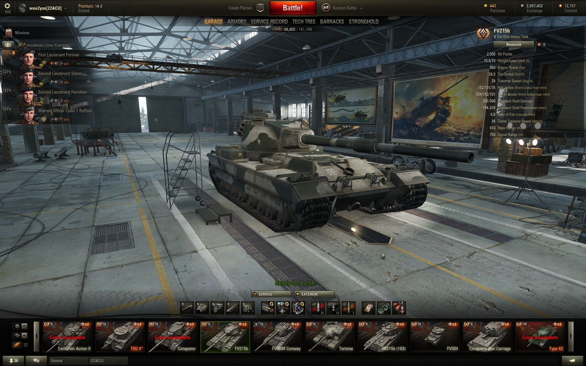

Woepack
woe2you's modpack for World of Tanks
woepack for World of Tanks
A curated collection of mods to improve your World of Tanks experience.
Garage Enhancements

A three-row carousel with enhanced filters shows your win rate, games played, average kills per game, average damage per game, WN8 target damage, Mastery badge, xTE and current Mark of Excellence percentage on each tank.
HD Models

Wargaming are slowly releasing HD models for all their tanks. The FV215b (while a very popular tank) is unlikely to get the HD treatment from WG because it's slated for replacement. Thanks to Milkym4n, you can now drive your FV in glorious HD. Source: Milky's Mods
In-game Enhancements

Install and uninstall with a click

Included Mods
- XVM
- My XVM config
- J1mB0’s gunsight
- YasenKrasen Session Stats
- AutoAim+
- SpotMessanger
- Battle Assistant
- TessuMod
- Armagomen’s Team HP Pool
- Elkano’s Minimap Ping Spam Blocker
- milkym4n's HD FV215b
- milkym4n's Type 59 G skin